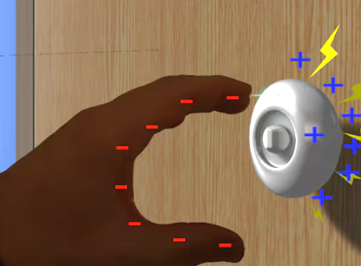

Static electricity isn't just a lab experiment; it’s a constant force in our environment. When the microscopic transfer of electrons we discussed previously happens on a larger scale, or interacts with neutral matter, we get some of the most recognizable phenomena in physics.
1. The "Magic" of Attraction
Have you ever wondered why a charged balloon attracts neutral bits of paper? If the paper isn't charged, why does it move? The answer is Electrostatic Induction and Polarization.
.png)
- The Approach: When you bring a negatively charged object (like a balloon) near a neutral piece of paper or another insulator, you aren't touching it yet, but you are bringing a powerful electric field close.
- The Shift (Polarization): Electrons in the paper's molecules are repelled by the negative comb. Since paper is an insulator, the electrons can't leave the atom, but they shift to the far side of the molecule.
- The Result: This leaves the side of the paper closest to the comb slightly positive.
- The Pull: Because the positive side of the paper is now closer to the comb than the negative side, the attractive force is stronger than the repulsive force. The paper "leaps" toward the comb.
2. Lightning
Lightning is essentially a massive version of the spark you feel when touching a doorknob. It is the result of a massive charge imbalance seeking equilibrium. Inside a storm cloud (Cumulonimbus), turbulent winds cause ice crystals and hailstones (graupel) to collide.
- The Swap: During these collisions, the lighter ice crystals lose electrons and become positive, while the heavier graupel gains electrons and becomes negative.
- The Separation: Updrafts carry the positive ice to the top of the cloud, while gravity pulls the negative graupel to the base. The cloud is now a giant, polarized battery.
The negative base of the cloud repels electrons in the Earth's surface, creating a positively charged shadow on the ground that follows the cloud like a ghost. Air is normally an insulator, but when the charge difference becomes too great (reaching roughly 3 million volts per meter), the air "breaks down."
- Stepped Leaders: A stream of negative charge pokes down from the cloud in jagged steps.
- Streamers: As the leader nears the ground, positive "streamers" reach up from tall objects (trees, buildings).
- The Connection: When they meet, a conductive path is formed, and a massive surge of current—the Return Stroke—blasts upward. That is the flash we see.
3. Why Do You Get "Zapped"? (The Human Spark)
When you walk across a carpet, friction (the Triboelectric effect) strips electrons from the carpet and deposits them on your body. You are now a walking capacitor, holding a high voltage.

- The Gap: As your hand nears a metal doorknob (a conductor), the electric field becomes so intense in the tiny air gap that it ionizes the air.
- The Discharge: Electrons jump the gap all at once to reach the ground. This heats the air instantly, creating a tiny shockwave (the "snap" sound) and a visible spark.
Pro-Tip: To avoid the pain, touch the metal with a key or a coin first. The spark will jump from the metal object to the doorknob, and you won't feel the localized "burn" on your fingertip!
Finished studying this topic?
Mark it as completed to unlock the next level in your Physics journey!